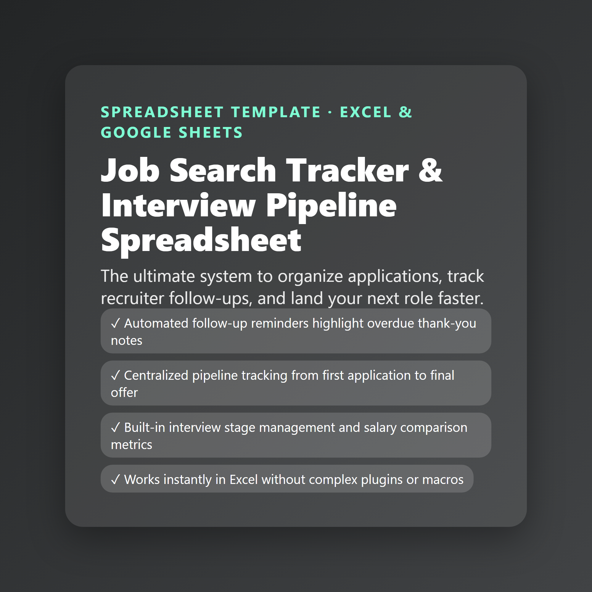

Job Search Tracker & Interview Pipeline Spreadsheet (Excel)
The ultimate system to organize applications, track recruiter follow-ups, and land your next role faster.
- Automated follow-up reminders highlight overdue thank-you notes
- Centralized pipeline tracking from first application to final offer
- Built-in interview stage management and salary comparison metrics
- Works instantly in Excel without complex plugins or macros
$11
Buy now · $11Includes: Job Search Tracker & Interview Pipeline Spreadsheet.xlsx · Job Search Tracker & Interview Pipeline Spreadsheet - Instructions.pdf
Stop losing track of your job applications. This professional Excel template helps professionals in transition manage applications, monitor interview stages, and organize recruiter contacts in one clean dashboard.
**What's Included:**
- Dashboard with automated pipeline metrics
- Main Applications Log with built-in follow-up reminder formulas
- Interview Schedule & Preparation Tracker
- Professional Contacts Directory
- Target Companies Wishlist
**Key Feature:** Includes a smart 'Follow-up Reminder' formula that automatically highlights rows when it's time to send a thank-you note or check in with recruiters.
**Format:** Microsoft Excel (.xlsx). Works immediately with zero setup required.